강의 상세 리포트
코딩 에이전트로 KODEX 200 가격을 불러와 노트북에 표시한다
데이터를 파일로 저장하고, 새 커널에서 처음부터 실행해 결과를 확인하는 첫 실습
Codex가 작업을 마쳤다고 해도 결과를 직접 확인한다
CSV와 노트북을 만든 뒤 처음부터 다시 실행해 본다
이번 차시에서는 영상 3에서 준비한 course-01-practice 폴더를 사용한다. Codex에 KODEX
200 가격을 요청해 CSV, Jupyter 노트북, requirements.txt를 만든다. 채팅에 “완료했습니다”가
나왔다고 끝내지 않는다. 왼쪽 파일 탐색기에 세 파일이 보이는지, 노트북이 저장된 CSV를 읽어
표와 그래프를 보여 주는지, 커널을 새로 시작해도 모든 셀이 오류 없이 실행되는지 직접 본다.
OpenAI의 Codex IDE 공식 문서는 열린 파일과 선택한 코드를 요청의 문맥으로 쓰고, 편집 결과를 에디터 안에서 검토하는 흐름을 설명한다. Codex의 답변은 작업 내용을 요약한 안내다. 실제로 만들어진 파일과 실행 결과는 VS Code에서 따로 확인해야 한다.
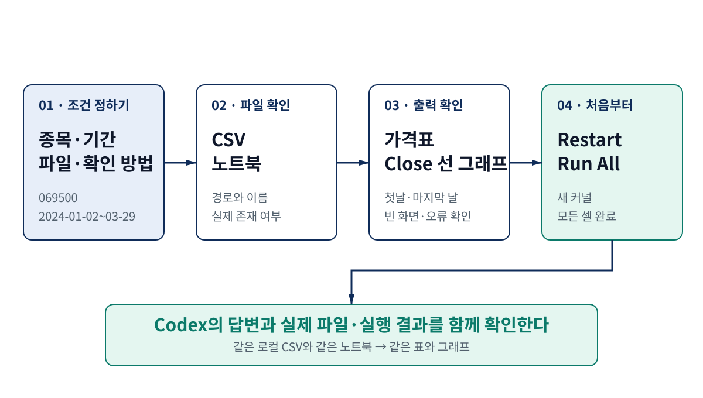
| 확인할 것 | 어디서 확인할까 | 문제가 있는 경우 |
|---|---|---|
| 작업 폴더 | VS Code 왼쪽 위에 course-01-practice가 열려 있다 |
개인 문서나 상위 폴더가 열려 있다 |
| 가격 파일 | data/kodex200_price.csv가 보이고 내용이 비어 있지 않다 |
답변에는 저장했다고 했지만 파일이 없다 |
| 노트북 | notebooks/kodex200_price.ipynb가 CSV를 읽는다 |
표의 값을 코드에 직접 적어 놓았다 |
| 실행 결과 | 날짜가 있는 표와 Close 선 그래프가 보인다 |
셀에 빨간 오류가 있거나 그래프가 비어 있다 |
| 처음부터 실행 | 커널을 다시 시작한 뒤 Run All이 끝까지 완료된다 |
앞서 만든 변수에 기대야만 실행된다 |
여기서는 코드의 완성도나 투자 전략의 수익성을 평가하지 않는다. 요청한 위치에 파일이 생겼는지, 그 파일을 다시 읽을 수 있는지, 노트북이 처음부터 실행되는지만 확인한다.
종목 정보와 데이터를 가져올 방법을 먼저 확인한다
069500이 KODEX 200인지 공식 상품 페이지에서 확인한다
실습 대상은 KODEX 200, 종목코드는 069500이다. 삼성자산운용의
KODEX 200 공식 상품 페이지에서
상품명, 종목코드, KOSPI 200 지수를 추적한다는 설명을 함께 확인할 수 있다. 숫자 코드만
믿고 바로 데이터를 받지 말고, 먼저 공식 상품 페이지에서 이름과 코드를 맞춘다.
한국거래소의 OPEN API 서비스 목록에는 ETF 일별매매정보가 있다. 다만 서비스 이용방법에 따르면 회원가입, API 인증키 신청, 관리자 승인, 개별 서비스 신청이 필요하다. 거래소가 제공하는 공식 경로는 중요하지만, 가입과 승인을 마치지 않은 초보자가 바로 따라 할 첫 실습에는 절차가 많다.
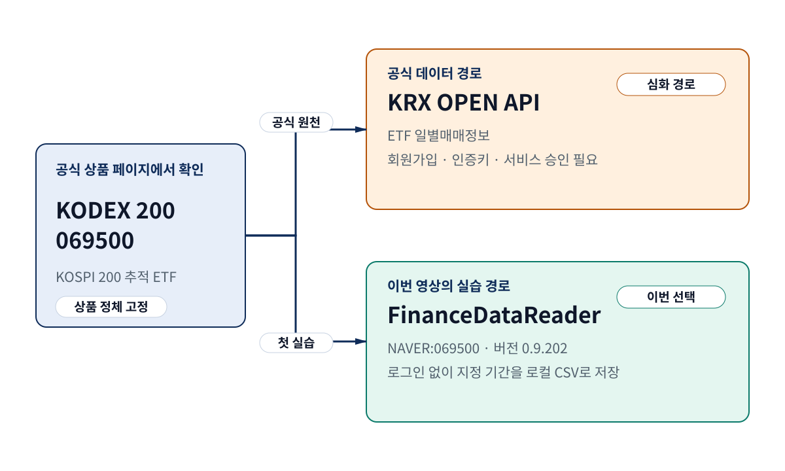
이번 실습에서는 공급자까지 적은 NAVER:069500을 사용한다
FinanceDataReader 공식 저장소는 국내 종목
가격을 읽는 DataReader와 NAVER: 접두사를 안내한다. 이번 실습의 호출은 다음과 같다.
fdr.DataReader("NAVER:069500", "2024-01-02", "2024-03-29")
2026년 8월 27일에 확인한 FinanceDataReader 0.9.202는 종목코드만 069500으로 적어도
NAVER 경로를 선택했다. 하지만 기본 설정은 라이브러리 버전에 따라 달라질 수 있다.
NAVER:069500처럼 공급자를 함께 적으면 어느 경로를 사용했는지 코드만 보고도 알 수 있다.
| 방법 | 특징 | 이번 실습에서의 선택 |
|---|---|---|
| KRX OPEN API | 거래소가 ETF 일별매매정보를 제공한다 | 인증키와 서비스 승인이 필요하므로 뒤에서 다룬다 |
FinanceDataReader NAVER:069500 |
짧은 Python 코드로 지정한 기간을 받을 수 있다 | 공급자와 버전을 기록하고 이번 실습에 사용한다 |
종목코드만 069500 |
코드는 짧지만 실제 공급자가 드러나지 않는다 | 사용하지 않는다 |
FinanceDataReader는 거래소 공식 API가 아니라 여러 웹 데이터 경로를 편하게 읽도록 만든
오픈소스 도구다. 공급 사이트의 응답 형식이나 라이브러리 구현이 바뀌면 열과 값이 달라질 수
있다. 또한 Close라는 열 이름만 보고 가격 조정 방식까지 단정하지 않는다. 가격 열의 의미와
공급자 차이는 다음 과정인 「노트북과 데이터 문해력」에서 다룬다.
요청문에는 목표, 작업 위치, 만들 파일, 확인 방법을 적는다
무엇을 만들고 어디까지 실행할지 한 번에 알려 준다
“KODEX 200 그래프를 만들어 줘”라고만 쓰면 종목, 기간, 저장 위치, 파일 이름, 데이터 공급자를 Codex가 추측해야 한다. 결과가 나와도 내가 원한 작업인지 확인하기 어렵다. 처음부터 다음 다섯 가지를 요청문에 적는다.
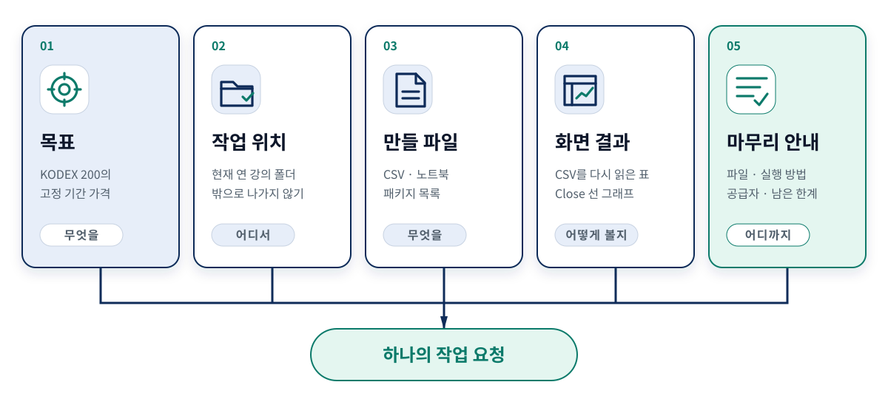
| 요청에 넣을 내용 | 이번 실습에서 정할 값 | 작업 뒤에 확인할 곳 |
|---|---|---|
| 목표 | KODEX 200 069500의 2024-01-02~2024-03-29 일별 가격 |
CSV의 종목과 시작일·종료일 |
| 작업 위치 | 현재 연 course-01-practice 폴더 안 |
왼쪽 파일 탐색기와 변경 파일 목록 |
| 만들 파일 | CSV, 노트북, requirements.txt |
세 파일의 실제 경로 |
| 화면에 보일 결과 | CSV를 다시 읽은 표와 Close 선 그래프 |
노트북 셀의 출력 |
| 마무리 안내 | 만든 파일, 실행 방법, 공급자, 남은 한계 | Codex 답변과 실제 파일의 일치 여부 |
그대로 붙여 넣어 실습할 요청문
다음 문장은 하나뿐인 정답 프롬프트가 아니다. 모든 수강생이 같은 결과를 비교할 수 있도록
이번 차시에서 사용할 조건을 정리한 예시다. 붙여 넣기 전에 현재 열린 폴더가
course-01-practice인지 확인한다.
현재 VS Code에서 연 course-01-practice 폴더 안에서만 작업해 주세요.
목적:
- KODEX 200(069500)의 2024-01-02부터 2024-03-29까지 일별 가격을 확인합니다.
- 데이터 공급자는 FinanceDataReader의 NAVER:069500 경로로 명시합니다.
산출물:
- data/kodex200_price.csv
- notebooks/kodex200_price.ipynb
- requirements.txt
노트북 요구사항:
- CSV가 없을 때만 데이터를 받아 저장하고, 이후 셀은 저장된 CSV를 다시 읽어야 합니다.
- 날짜가 포함된 가격표의 처음과 마지막 일부를 보여 주세요.
- Date를 가로축, Close를 세로축으로 한 선 그래프를 보여 주세요.
- 빈 데이터, 필수 열 누락, 시작일·종료일 불일치를 명확한 오류로 알려 주세요.
- 커널을 다시 시작한 뒤 Run All로 처음부터 실행할 수 있어야 합니다.
완료 보고:
- 만든 파일, 실행 방법, 사용한 라이브러리와 공급자, 확인이 필요한 한계를 요약해 주세요.
- 아직 매매 규칙이나 백테스트를 만들지 마세요.
Codex가 제안한 작업 순서를 먼저 읽는다. 현재 폴더 밖의 파일을 고치거나 다른 종목과 기간을 선택했다면 실행 전에 바로잡는다. 패키지 설치처럼 네트워크 연결과 파일 변경이 필요한 명령도 어느 가상환경에 설치하는지 확인한 뒤 진행한다.
CSV와 노트북의 역할을 나눠서 만든다
CSV에는 받은 가격을 저장하고 노트북은 그 파일을 읽는다
작업이 끝나면 폴더는 다음처럼 보인다.
course-01-practice/
├── data/
│ └── kodex200_price.csv
├── notebooks/
│ └── kodex200_price.ipynb
└── requirements.txt
requirements.txt에는 같은 도구를 다시 설치할 수 있도록 패키지 버전을 적는다. 실제 데모는
Python 3.12.3 가상환경과 다음 버전으로 실행했다.
finance-datareader==0.9.202
pandas==3.0.5
matplotlib==3.11.1
ipykernel==7.1.0
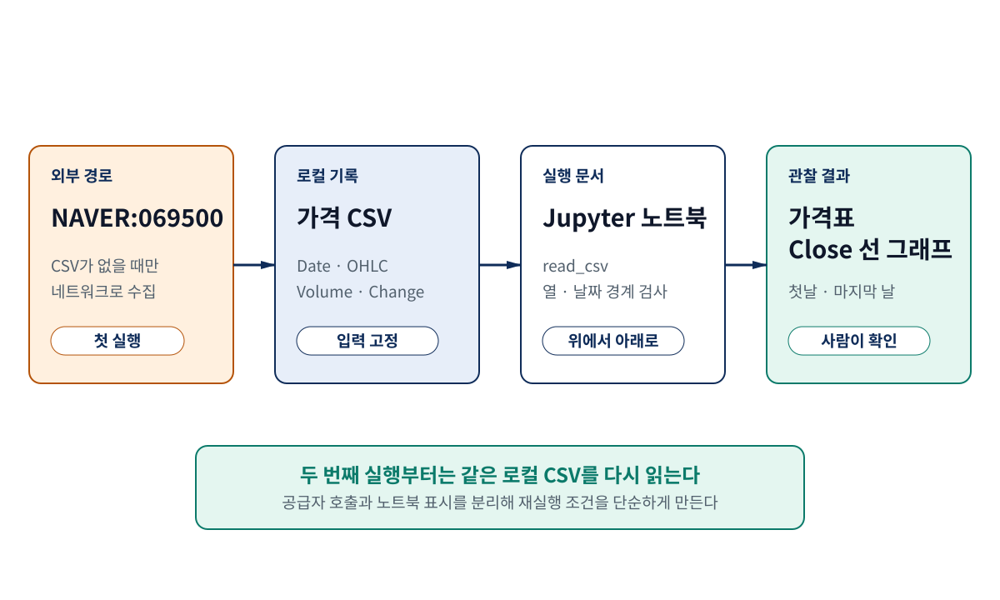
| 파일 | 하는 일 | 열어 볼 내용 |
|---|---|---|
requirements.txt |
실습에 사용한 Python 패키지 버전을 적는다 | 네 패키지 이름과 버전 |
data/kodex200_price.csv |
처음 받은 가격을 로컬에 저장한다 | Date와 가격 열, 실제 데이터 행 |
notebooks/kodex200_price.ipynb |
CSV를 읽고 검사한 뒤 표와 그래프를 표시한다 | 파일 경로, 열 이름, 셀 출력 |
data/kodex200_price.csv를 VS Code에서 열어 머리글과 가격 행이 저장됐는지 확인했다. 설명을 위해 다시 그린 그림이 아니라 녹화에 사용한 실제 화면이다.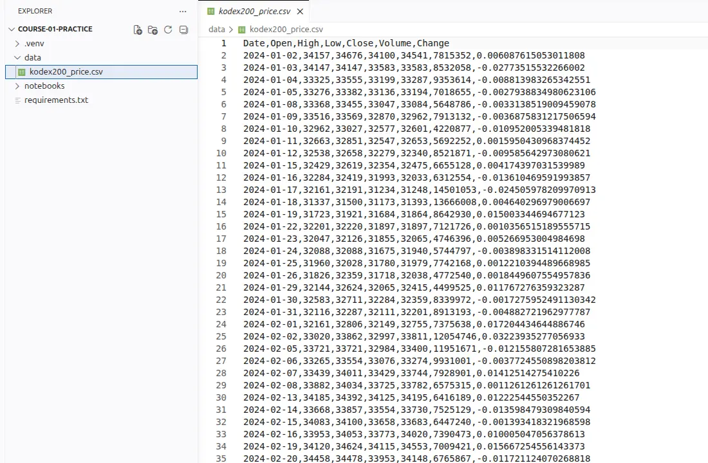
노트북 코드에는 각 단계의 이유를 주석으로 남긴다
pandas 공식 문서는
DataFrame.to_csv()로 표를 CSV에 쓰는 방법을,
read_csv() 문서는
그 파일을 다시 표로 읽는 방법을 설명한다. 내려받을 노트북에는 아래 코드를 단계별 셀로
나눠 넣었다. 처음 배우는 사람도 흐름을 따라갈 수 있도록 주석은 도구 불러오기, 경로 설정,
첫 수집, CSV 읽기, 값 확인, 표와 그래프 표시에 맞춰 달았다.
# 파일 경로, 데이터 수집, 표 처리, 그래프에 필요한 도구를 불러옵니다.
from pathlib import Path
import FinanceDataReader as fdr
import matplotlib.pyplot as plt
import pandas as pd
# 실습에서 사용할 종목과 조회 기간을 한곳에 모아 둡니다.
START = "2024-01-02"
END = "2024-03-29"
SYMBOL = "NAVER:069500"
# 노트북 폴더에서 실행해도 프로젝트의 data 폴더를 찾도록 기준 경로를 정합니다.
cwd = Path.cwd()
project_root = cwd.parent if cwd.name == "notebooks" else cwd
csv_path = project_root / "data" / "kodex200_price.csv"
csv_path.parent.mkdir(parents=True, exist_ok=True)
print(f"저장 위치: {csv_path.relative_to(project_root)}")
# CSV가 없을 때만 가격을 내려받아 저장합니다.
if not csv_path.exists():
downloaded = fdr.DataReader(SYMBOL, START, END)
if downloaded.empty:
raise RuntimeError("가격 데이터가 비어 있습니다.")
downloaded.index.name = "Date"
downloaded.to_csv(csv_path)
print(f"사용할 CSV: {csv_path.relative_to(project_root)}")
# 이후 작업은 인터넷이 아니라 저장해 둔 CSV를 다시 읽어 진행합니다.
prices = pd.read_csv(csv_path, parse_dates=["Date"])
# 필요한 열과 시작일·종료일이 요청한 조건과 맞는지 확인합니다.
required = {"Date", "Open", "High", "Low", "Close", "Volume", "Change"}
if not required.issubset(prices.columns):
raise RuntimeError(f"필수 열이 없습니다: {required - set(prices.columns)}")
if prices["Date"].min() != pd.Timestamp(START):
raise RuntimeError("첫 날짜가 요청과 다릅니다.")
if prices["Date"].max() != pd.Timestamp(END):
raise RuntimeError("마지막 날짜가 요청과 다릅니다.")
print(
f"확인 완료: {len(prices)}행, "
f"{prices['Date'].min().date()} ~ {prices['Date'].max().date()}"
)
# 표의 처음과 마지막을 나란히 확인합니다.
display(prices.head())
display(prices.tail())
# Date를 가로축, Close를 세로축으로 종가 흐름을 그립니다.
fig, ax = plt.subplots(figsize=(10, 4))
ax.plot(prices["Date"], prices["Close"], color="#0F2C59", linewidth=2)
ax.set(title="KODEX 200 Close", xlabel="Date", ylabel="Close")
ax.grid(alpha=0.2)
plt.show()
첫 실행에서는 CSV가 없으므로 데이터를 받아 저장한다. 그다음부터는 같은 CSV를 읽는다. 인터넷 연결이 잠시 끊겨도 이미 받은 실습 데이터로 표와 그래프를 다시 만들 수 있다. 데이터를 새로 받고 싶다면 기존 파일을 무심코 덮어쓰지 말고 종목, 기간, 공급자를 먼저 확인한다.
실제 노트북의 표와 그래프로 받은 데이터를 확인한다
코드 셀을 실행하면 표와 차트가 노트북 안에 나타난다
위 코드는 설명용 예시로 끝나지 않는다. 실제 데모 노트북에서 셀을 실행하면
display(prices.head())와 display(prices.tail())의 표가 코드 바로 아래에 나타나고,
마지막 셀 아래에는 Matplotlib 그래프가 표시된다.
Close 열을 그린 그래프가 보인다.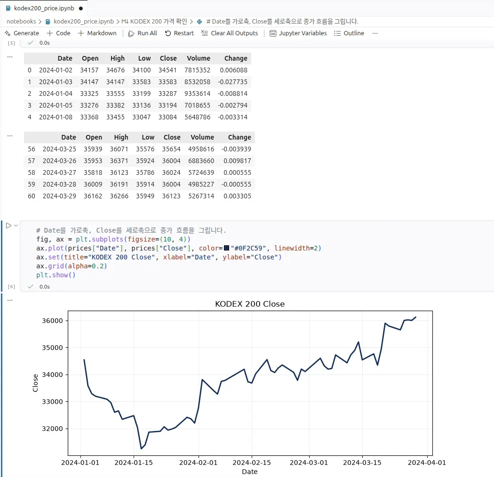
2026년 8월 27일에 직접 실행해 확인한 결과
Python 3.12.3 가상환경에서 실행했을 때 2024년 1월 2일부터 3월 29일까지 61행이 저장됐다.
열은 Date, Open, High, Low, Close, Volume, Change였고, 첫 행의 Close는
34,541, 마지막 행은 36,123이었다.
Close 값을 리포트에서 크게 볼 수 있도록 같은 값으로 다시 그린 벡터 그래프. 노트북 실행 여부는 그림 6의 실제 화면에서 확인한다.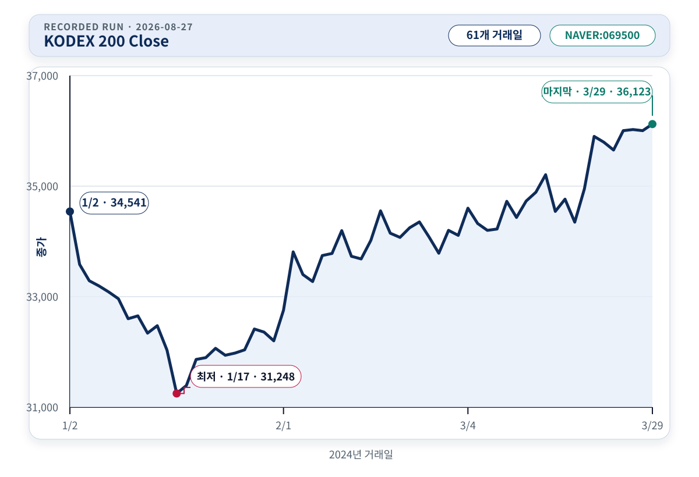
| 확인 항목 | 이번 실행의 값 | 노트북에서 볼 곳 |
|---|---|---|
| 행 수 | 61 | 확인 완료 메시지 |
| 시작일 | 2024-01-02 | 첫 번째 표의 첫 행 |
| 종료일 | 2024-03-29 | 두 번째 표의 마지막 행 |
첫 Close |
34,541 | 첫 번째 표의 첫 행 |
마지막 Close |
36,123 | 두 번째 표의 마지막 행 |
최저 Close |
31,248 (2024-01-17) | CSV와 그래프의 가장 낮은 지점 |
최고 Close |
36,123 (2024-03-29) | CSV 마지막 행과 그래프 끝점 |
61행이라는 숫자는 이번에 저장한 파일의 결과다. 공급자가 과거 자료를 고치거나 FinanceDataReader의 처리 방식이 바뀌면 나중에는 값이 달라질 수 있다. 촬영하거나 다시 실습할 때에는 행 수, 열 이름, 시작일, 종료일을 새 결과와 맞춰 본다. 달라졌다면 공급자와 버전을 기록하고 리포트와 화면을 함께 고친다.
표에서는 열 이름과 정확한 날짜·값을 읽기 쉽다. 그래프에서는 날짜 순서가 뒤집혔는지, 값이
한 줄로 뭉개졌는지, 큰 빈 구간이 있는지 빠르게 볼 수 있다.
Matplotlib의 plot 공식 문서는
x와 y 값을 선으로 잇는 기본 동작을 설명한다. 여기서 그래프는 투자 신호가 아니라
CSV의 Close 열을 날짜 순서대로 표시했는지 확인하는 화면이다.
새 커널에서 노트북을 처음부터 다시 실행한다
Restart와 Run All을 실제로 눌러 본다
노트북은 셀을 원하는 순서로 실행할 수 있다. 편리하지만 앞서 실행한 셀의 변수가 메모리에
남아 있으면, 현재 파일만으로는 실행되지 않는 문제를 놓칠 수 있다.
VS Code의 Jupyter 공식 문서는
오른쪽 위에서 커널을 선택하고, 노트북 도구 모음에서 커널을 다시 시작하거나 Run All로
모든 셀을 실행하는 기능을 안내한다.
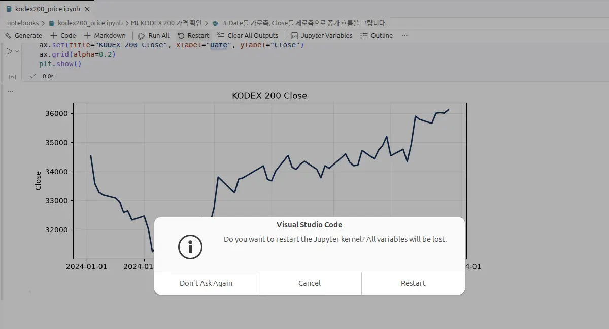
.venv 커널, 도구 모음의 Run All, 각 코드 셀 아래의 초록색 완료 표시를 함께 볼 수 있다.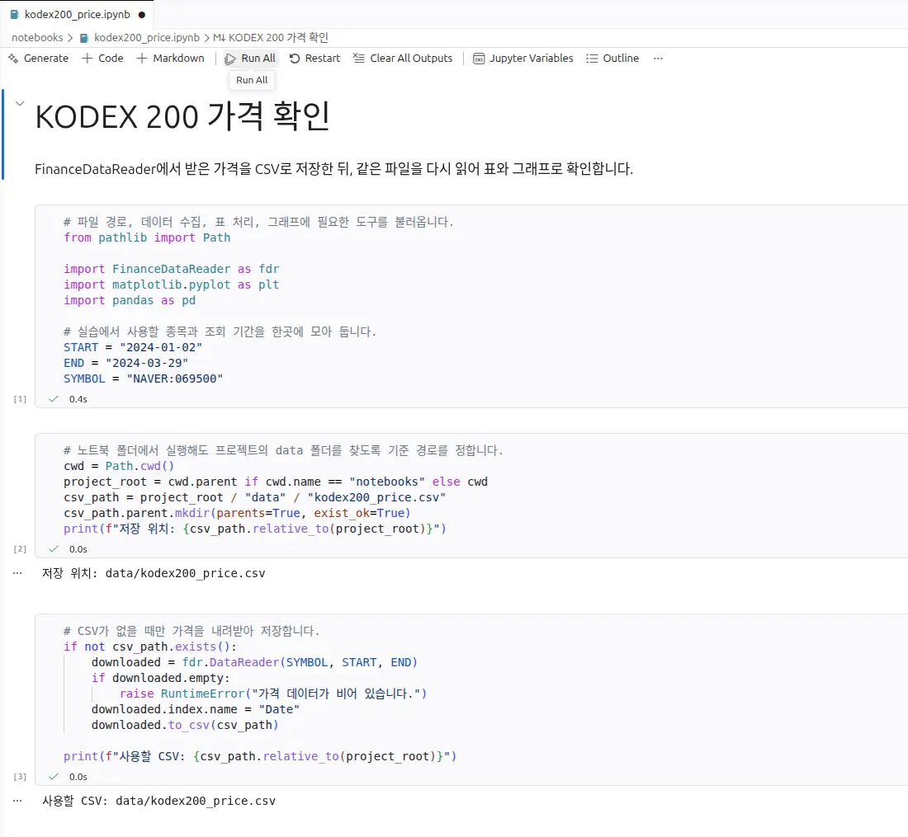
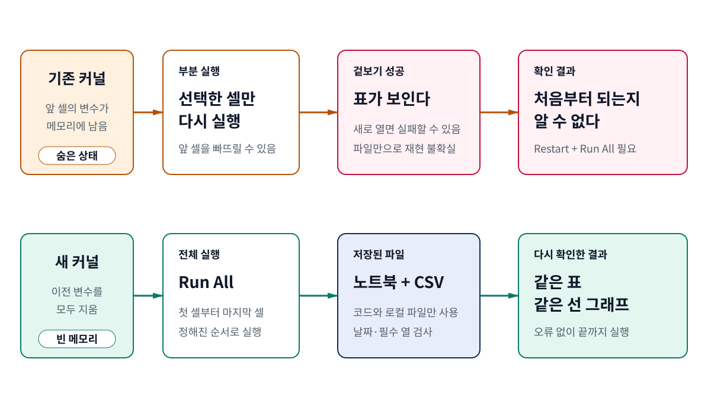
다음 순서로 직접 해 본다.
kodex200_price.ipynb를 저장한다.- 오른쪽 위 커널이 영상 3에서 만든
.venv인지 확인한다. - 노트북 도구 모음에서 Restart를 누르고, 확인 창에서 Restart를 선택한다.
- Run All을 눌러 첫 셀부터 마지막 셀까지 실행이 끝날 때까지 기다린다.
- 빨간 오류가 없고, 표의 시작일·종료일과
Close그래프가 다시 나타나는지 확인한다.
여기서 “같은 결과”는 인터넷의 값이 앞으로도 영원히 같다는 뜻이 아니다. 이 노트북은 처음 받은 데이터를 로컬 CSV에 저장하고, 이후 실행에서는 그 파일을 다시 읽는다. 따라서 같은 CSV와 같은 코드로 같은 표와 그래프가 나오는지를 보는 것이다. CSV를 의도적으로 갱신했다면 새 파일의 공급자, 기간, 열 이름을 다시 확인한다.
오류가 나면 Codex에 “고쳐 줘”라고만 쓰지 말고 오류 메시지를 그대로 보여 준다. 어느 셀에서
멈췄는지, 어떤 파일을 찾고 있었는지, 그 파일이 실제로 있는지도 함께 알려 준다. 수정한 뒤에는
커널을 다시 시작하고 Run All을 반복한다. 중간 셀 하나가 실행됐다는 이유로 끝내지 않는다.
그래프가 나왔다고 백테스트를 한 것은 아니다
이번에 한 일은 데이터 수집·저장·표시까지다
첫 영상에서 퀀트 트레이딩을 설명하며 입력, 판단 기준, 행동, 과거 검증을 나눴다. 이번 노트북에는 입력 자료인 가격과 이를 읽는 코드가 있다. 하지만 언제 사고팔지 정하는 규칙, 거래를 흉내 낸 체결 기록, 수수료와 슬리피지, 성과와 위험 평가는 없다.
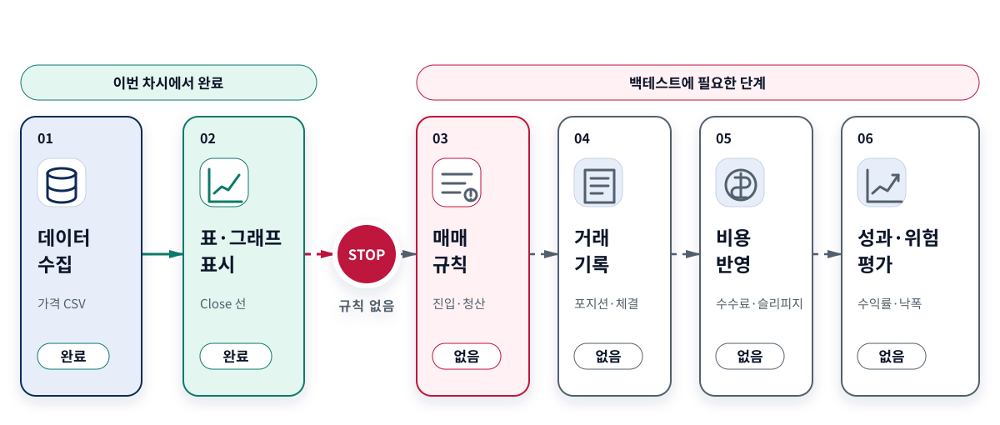
| 지금 확인한 것 | 아직 하지 않은 것 | 말할 수 있는 범위 |
|---|---|---|
| KODEX 200 가격 CSV | 매수·매도 규칙 | 지정한 종목과 기간의 가격 파일을 만들었다 |
날짜별 Close 선 그래프 |
포지션과 거래 기록 | 저장된 가격을 날짜 순서대로 표시했다 |
| 새 커널에서 전체 실행 | 수수료·슬리피지·세금 반영 | 노트북이 처음부터 오류 없이 실행됐다 |
| 시작일·종료일·필수 열 확인 | 수익률·위험·비교 기준 계산 | 파일 구조와 조회 기간이 요청과 맞았다 |
그래프가 오른쪽 위로 올라갔다고 해서 전략이 수익을 냈다고 말할 수도 없다. 어느 날 매수했는지, 얼마나 보유했는지, 언제 매도했는지 정하지 않았기 때문이다. 이번 결과는 다음과 같이 정리한다.
요청한 기간의 KODEX 200 가격을 CSV에 저장하고, 노트북이 그 파일을 읽어 표와 그래프로 다시 표시하는 것까지 확인했다. 매매 규칙, 체결, 비용, 성과 평가가 없으므로 전략의 수익성이나 실제 운용 가능성은 아직 판단하지 않았다.
다음 과정에서는 날짜와 열의 의미, 휴장일, 결측치, 수정주가, 공급자 차이를 차례로 다룬다. 전략 백테스트는 데이터를 먼저 점검한 뒤 시작한다.
용어, 실행 기록, 참고 자료
핵심 용어
| 용어 | 이 리포트에서의 뜻 |
|---|---|
| 작업 폴더 | Codex가 읽고 고칠 수 있도록 VS Code에서 연 course-01-practice 폴더 |
| CSV | 행과 열로 된 표를 쉼표로 구분해 저장하는 텍스트 파일 |
| Jupyter 노트북 | 설명, 코드 셀, 실행 결과를 한 문서에서 보는 .ipynb 파일 |
| 커널 | 노트북의 Python 코드를 실행하고 변수를 메모리에 보관하는 프로그램 |
Run All |
노트북의 모든 셀을 위에서 아래 순서로 실행하는 명령 |
| 공급자 | 가격 데이터를 돌려주는 외부 경로. 이 차시에서는 NAVER 경로를 코드에 적는다 |
| 백테스트 | 정해진 매매 규칙과 체결·비용 가정을 과거 데이터에 적용해 성과와 위험을 살펴보는 절차 |
실제 데모와 재실행 기록
2026년 8월 27일에 별도의 course-01-practice 폴더와 Python 3.12.3 가상환경을 만들었다.
NAVER:069500으로 CSV를 생성한 뒤 VS Code에서 노트북을 열어 커널을 다시 시작하고
Run All을 실행했다. 표의 처음·마지막 다섯 행과 Matplotlib 그래프가 다시 나타나는
과정을 실제로 녹화했고, 그림 5·6·8·9는 그 데모 화면에서 가져왔다.
CSV의 SHA-256은
99daaa462e9c2daa8ea963f8a117cff9195a2686ec000705f2411f2d1a034cbb였다. 이 값은 정답으로
외울 숫자가 아니다. 처음 실행과 새 커널 전체 실행 사이에서 같은 CSV를 사용했는지 확인하기
위해 남긴 제작 기록이다.
외부 1차 자료에서 확인한 내용
| 자료 | 확인한 내용 |
|---|---|
| 삼성자산운용, KODEX 200 공식 상품 페이지 | 상품명, 종목코드 069500, KOSPI 200 추적 상품이라는 설명 |
| 한국거래소, OPEN API 서비스 목록 | ETF 일별매매정보의 제공 범위 |
| 한국거래소, OPEN API 서비스 이용방법 | 회원가입, 인증키 신청, 관리자 승인, 개별 서비스 신청 절차 |
| FinanceDataReader, 공식 GitHub 저장소와 사용 예 | 국내 종목 가격 호출과 NAVER: 공급자 접두사 |
| OpenAI, Codex IDE 공식 문서 | 열린 파일을 문맥으로 작업하고 에디터에서 변경 내용을 검토하는 흐름 |
| Microsoft, Jupyter Notebooks in VS Code | 커널 선택, Run All, 출력 지우기, 커널 다시 시작 기능 |
pandas, DataFrame.to_csv와 read_csv |
표를 CSV로 저장하고 다시 읽는 방법 |
Matplotlib, pyplot.plot |
x와 y 값을 선으로 표시하는 기본 동작 |
표 1·3·4·6과 그림 1·3·4·10·11의 확인 방법은 외부 기관이 정한 표준이 아니다. 초보자가 Codex의 답변과 실제 파일·실행 결과를 맞춰 보도록 AIML Quant가 만든 학습용 점검 방법이다. 이 항목을 모두 확인해도 데이터 품질, 전략 수익성, 위험, 실제 운용 가능성이 보장되지는 않는다.
실습 파일 내려받기
아래 파일은 이 리포트와 실제 데모에 사용한 2026년 8월 27일 실행본이다. 먼저 세 파일을
같은 course-01-practice 폴더 구조에 놓고, 영상 3에서 만든 .venv를 커널로 선택한 뒤
노트북을 실행한다. CSV는 학습 결과를 고정하기 위한 파일이며 최신 시세를 자동으로 반영하지
않는다.
- Jupyter 노트북 내려받기 — kodex200_price.ipynb
- KODEX 200 가격 CSV 내려받기 — kodex200_price.csv
- 패키지 목록 내려받기 — requirements.txt
파일을 각각 저장했다면 data/kodex200_price.csv,
notebooks/kodex200_price.ipynb, requirements.txt 경로로 배치한다. 노트북에서
Restart → Run All을 실행해 그림 6과 같은 표와 그래프가 나타나는지 확인한다.